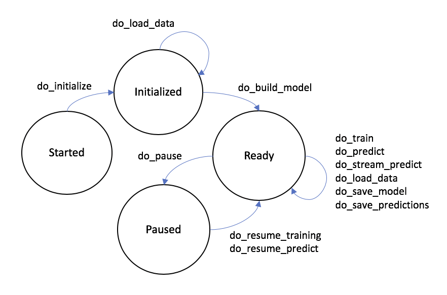

Guide¶
Model Interface¶
A MISTK model implements the AbstractModel class. This class provides a set of abstract methods that represent the model lifecycle and must be implemented by the new model. Ultimately, these methods form the core of the web endpoint service that is made available for every model implementation.
- do_initialize (objectives: list, props: dict, hparams: dict)
Called once the endpoint service has launched. This would typically be the first call made to the service. Perform any general setup and initialization.
param objectives: A list of model objectives intended to aid in its setup and initialization. Possible values are: ‘training’, ‘prediction’, ‘streaming_prediction’, ‘transfer_learning’. param props: A dictionary of settings or configuration values that are passed from the ecosystem, but are not considered model hyperparameters. param hparams: A dictionary of hyperparameters that are used by the model. - do_load_data (dataset_map: dict)
Instructs the container to load training and/or testing data (or at least record in memory where the data is) from the supplied paths.
param dataset_map: A dictionary that maps string keys {train, test} to a MistkDataset object that contains information on the dataset to load. The objectives values for this model determines which keys are present in the map (i.e. a model with only a training objective should not depend on a ‘test’ key to be present).
The MistkDataset values will contain at least the following fields:
data_path: A string containing the path to the dataset root folder
modality: A string with value image, audio, video, or text
format: A string containing the name of the format of this dataset
- do_build_model (path=None)
Instructs the service to build all necessary data structures given the architecture and selected hyperparameters.
param path: The path to the model file or checkpoint that should be loaded. Defaults to None if no file was specified in this model’s definition. - do_train ()
- Perform training with the previously supplied data.
- do_predict ()
- Perform predictions with the previously supplied data.
- do_pause ()
- Pause the current training or testing.
- do_resume_training ()
- Resume the previously paused training.
- do_resume_predict ()
- Resume the previously paused predictions.
- do_save_predictions (dataPath)
Save the model predictions to the supplied data path. The predictions should be saved as CSV with each row in the following format:
id,label[,confidence][,bounds]
param dataPath: The path to which the predictions should be saved. - do_stream_predict (data_map: dict)
Perform predictions on the input dict of id’s to base64 encoded data and return a dict of id’s to predicted values. The underlying format of the base64 encoded data should be the native input format for the model.
param data_map: A dict of id’s to base64 encoded data. return: A dict of id’s to predicted values. - do_save_model (path)
Save a checkpoint of the model to the supplied data path. Format of the saved file(s) is at the discretion of the model. The infrastructure associates this checkpoint with this model.
param path: The path to which the model should be saved. - do_terminate ()
- Prepare for application termination.
The Model State Machine¶
Model implementations follow a workflow lifecycle based on state machine transitions. The underlying MISTK infrastructure ensures that only legal transitions from one state to another can be made and that the appropriate model methods are called during those transitions. The image below illustrates the high-level state machine transitions and the model methods that may be called between them.
The ‘Terminated’ state (and associated method ‘do_terminate’) is not pictured but is a valid transition from any of the states depicted above. Note that an internal ‘Failed’ state will be entered if the model implementation throws an exception. No further model activities are permitted from the ‘Failed’ state.
Model Status¶
Model implementations are encouraged to report status pertaining to their current workflow state back to the MISTK infrastructure by calling the update_status(dict) method inherited from AbstractModel (note this method is intended to be called by the model, not overridden as the methods above). This method takes a dictionary object of key-value pairs defined by the model. For example, the logistic regression model below updates it status with the number of samples fit during training and the number of samples predicted during testing.
Predictions and Ground Truth¶
Model prediction output from the do_save_predictions method as well as corresponding dataset ground truth should be CSV-formatted as follows:
id,label[,confidence][,bounds]
The id field can be arbitrary as long as predictions and ground truth use the same values. All columns except id may contain whitespace-separated values as necessary. The confidence probabilities and bounds values are optional.
Example¶
The following example code implements a logistic regression algorithm from scikit-learn with the MISTK model interface which operates on a common public dataset:
1 2 3 4 5 6 7 8 9 10 11 12 13 14 15 16 17 18 19 20 21 22 23 24 25 26 27 28 29 30 31 32 33 34 35 36 37 38 39 40 41 42 43 44 45 46 47 48 49 50 51 52 53 54 55 56 57 58 59 60 61 62 63 64 65 66 67 68 69 70 71 72 73 74 75 76 77 78 79 80 81 82 83 84 85 86 87 88 89 90 91 92 93 94 95 96 97 98 99 100 101 102 103 104 105 106 107 108 109 110 111 112 113 114 115 116 117 118 119 120 121 122 123 124 125 126 127 128 129 130 131 132 133 134 135 136 137 138 139 140 141 142 143 144 145 146 147 148 149 150 151 152 | ##############################################################################
#
# This program is free software: you can redistribute it and/or modify
# it under the terms of the GNU General Public License as published by
# the Free Software Foundation, either version 3 of the License, or
# (at your option) any later version.
#
# This program is distributed in the hope that it will be useful,
# but WITHOUT ANY WARRANTY; without even the implied warranty of
# MERCHANTABILITY or FITNESS FOR A PARTICULAR PURPOSE. See the
# GNU General Public License for more details.
#
# You should have received a copy of the GNU General Public License
# along with this program. If not, see <https://www.gnu.org/licenses/>.
#
##############################################################################
import logging
import os
import pickle
import pandas
import base64
import json
from sklearn.linear_model import LogisticRegression
from mistk.abstract_model import AbstractModel
# derive this model from AbstractModel
class ScikitLearnLogisticRegressionModel(AbstractModel):
def __init__(self):
# remember to call the base __init__
AbstractModel.__init__(self)
# initialize our model variables
self._props = None
self._hparams = None
self._regr = None
self._X_train = None
self._Y_train = None
self._X_test = None
self._data_loaded = False
self._predictions = None
self._confidence = None
self._model_file_name = 'scikit-logistic-regression-model.bin'
self._objectives = None
def do_initialize(self, objectives: list, props : dict, hparams : dict):
self._props = props or {}
self._hparams = hparams or {}
self._objectives = objectives
logging.info(self._props)
if 'model_file_name' in self._props:
self._model_file_name = self._props['model_file_name']
def do_load_data(self, dataset_map: dict):
# check for and load training data and/or test data
# NOTE this model is coded to this particular (arbitrary)
# dataset format
if 'train' not in dataset_map and 'test' not in dataset_map:
raise RuntimeError('No datasets provided')
if 'train' in dataset_map:
dataset = dataset_map['train']
data_array = self.read_dataset(dataset.data_path + '/data.csv')
self._X_train = data_array[:, 0:-1]
self._Y_train = data_array[:, -1]
if 'test' in dataset_map:
dataset = dataset_map['test']
data_array = self.read_dataset(dataset.data_path + '/data.csv')
self._X_test = data_array[:, 0:-1]
def do_build_model(self, path=None):
if path:
# if we got a path to a saved model then load it
path = os.path.join(path, self._model_file_name)
if os.path.exists(path):
logging.debug("Loading model " + path)
with open(path, mode='rb') as reader:
# we decided to use python pickle to save and load
# model checkpoints in this model, but other models
# are free to use any format they desire
self._regr = pickle.load(reader)
assert isinstance(self._regr, LogisticRegression)
else:
self._regr = LogisticRegression()
else:
self._regr = LogisticRegression()
def do_train(self):
# train with our previously loaded data
self._regr.fit(self._X_train, self._Y_train)
self.update_status({"samples_fit": len(self._X_train)})
def do_save_model(self, path):
path = os.path.join(path, self._model_file_name)
logging.info("Saving model to " + path)
# just saving a simple 'pickled' model to disk
with open(path, mode='wb') as writer:
writer.write(pickle.dumps(self._regr))
def do_pause(self):
# pause is not implemented for this simple example, however more complex
# models should support pausing during long operations like training
raise NotImplementedError()
def do_resume_training(self):
raise NotImplementedError()
def do_resume_predict(self):
raise NotImplementedError()
def do_predict(self):
# predict with our previously loaded data
self._predictions = self._regr.predict(self._X_test)
self._confidence = self._regr.predict_proba(self._X_test)[:,1]
self.update_status({"samples_predicted": len(self._X_test)})
def do_save_predictions(self, dataPath):
dataPath = os.path.join(dataPath, "predictions.csv")
logging.info("Saving predictions to " + dataPath)
with open(dataPath, mode='w') as writer:
for i in range(self._predictions.shape[0]):
# write out a results csv that can be evaluated
writer.write(str(i) + "," + str(self._predictions[i])
+ "," + str(self._confidence[i]) + "\n")
def do_stream_predict(self, data_map: dict):
# stream prediction takes a dict of id's to base64 encoded data
# and returns a dict of id's to predicted values
# this model expects the underlying encoded data to be a JSON list of feature values
predictions = {}
for key, value in data_map.items():
logging.debug('Predicting class for key ' + key)
data_row = json.loads(base64.b64decode(value))
prediction = self._regr.predict([data_row])
predictions[key] = prediction[0]
return predictions
def do_terminate(self):
# nothing to clean up for this model
pass
def read_dataset(self, data_path):
logging.debug("Loading dataset from %s", data_path)
with open(data_path) as reader:
dataframe = pandas.read_csv(reader, header=None)
return dataframe.values
|
Transfer learning¶
Model support of transfer learning is independent to each model implementation. Model developers that use the MISTK library need to incorporate their implementation features for transfer learning into their build_model and train methods. The PyTorch implementation below builds their model with specific configurations when performing transfer learning.
1 2 3 4 5 6 7 8 9 10 11 12 13 14 15 16 17 18 19 20 21 22 23 24 25 26 27 28 29 30 31 32 33 34 35 36 37 38 39 40 41 42 43 44 45 46 47 48 49 50 51 52 53 54 55 56 57 58 59 60 61 62 63 64 65 66 67 68 69 70 71 72 73 74 75 76 77 78 79 80 81 82 83 84 85 86 87 | def do_build_model(self, path=None):
arch = self._props.get('arch', 'densenet161')
logging.debug("Loading new model for " + arch)
self._model = models.__dict__[arch]()
self._learning_rate = self._hparams.get('learning_rate', 0.1)
if path and 'checkpoint_load_file' in self._props:
checkpoint_path = os.path.join(path, self._props['checkpoint_load_file'])
if os.path.isfile(checkpoint_path):
have_checkpoint = True
else:
logging.error('Specified checkpoint file is not valid, ignoring')
have_checkpoint = False
else:
logging.debug('No checkpoint file specified')
have_checkpoint = False
if have_checkpoint:
# imagenet has 1000 labels and that is the assumed default
number_labels = self._props.get('number_labels', 1000)
if number_labels != 1000:
logging.debug("Setting number of labels to " + str(number_labels))
self._model.set_classifier(number_labels)
# Need to set this before the checkpoint is loaded
if arch.startswith('alexnet') or arch.startswith('vgg'):
self._model.features = torch.nn.DataParallel(self._model.features)
self._model.cuda()
else:
self._model = torch.nn.DataParallel(self._model).cuda()
logging.debug('Finished loading model parallelization features')
logging.debug('Loading model checkpoint from %s' % checkpoint_path)
checkpoint = self.load_state_file(checkpoint_path)
self._start_epoch = checkpoint['epoch']
self._model.load_state_dict(checkpoint['state_dict'])
if number_labels != 1000:
logging.debug("Assuming optimizer was used for transfer learning")
self._optimizer = torch.optim.SGD(self._model.module.get_classifier().parameters(), self._learning_rate,
momentum=self._hparams.get('momentum', 0.9),
weight_decay=self._hparams.get('weight_decay', 1e-4))
else:
self._optimizer = torch.optim.SGD(self._model.parameters(), self._learning_rate,
momentum=self._hparams.get('momentum', 0.9),
weight_decay=self._hparams.get('weight_decay', 1e-4))
logging.debug('Loading optimizer settings from checkpoint')
self._optimizer.load_state_dict(checkpoint['optimizer'])
else:
if path and 'model_load_file' in self._props:
remote_path = os.path.join(path, self._props['model_load_file'])
if os.path.isfile(remote_path):
logging.debug('Loading model load file from %s' % remote_path)
self._model.load_state_dict(self.load_state_file(remote_path))
else:
logging.error('Specified model load file is not valid, ignoring')
else:
logging.debug('No model load file specified')
if 'transfer_learning' in self._objectives:
logging.debug('Freezing hidden layers for transfer learning')
for param in self._model.parameters():
param.requires_grad = False
# imagenet has 1000 labels and that is the assumed default
number_labels = self._props.get('number_labels', 1000)
logging.debug("Setting number of labels to " + str(number_labels))
self._model.set_classifier(number_labels)
# This will need to be loaded after the model load
if arch.startswith('alexnet') or arch.startswith('vgg'):
self._model.features = torch.nn.DataParallel(self._model.features)
self._model.cuda()
else:
self._model = torch.nn.DataParallel(self._model).cuda()
logging.debug('Finished loading model parallelization features')
if 'transfer_learning' in self._objectives:
self._optimizer = torch.optim.SGD(self._model.module.get_classifier().parameters(), self._learning_rate,
momentum=self._hparams.get('momentum', 0.9),
weight_decay=self._hparams.get('weight_decay', 1e-4))
else:
self._optimizer = torch.optim.SGD(self._model.parameters(), self._learning_rate,
momentum=self._hparams.get('momentum', 0.9),
weight_decay=self._hparams.get('weight_decay', 1e-4))
|
Model developers will need to specify in their model properties that they are performing transfer learning when using this model for that purpose.